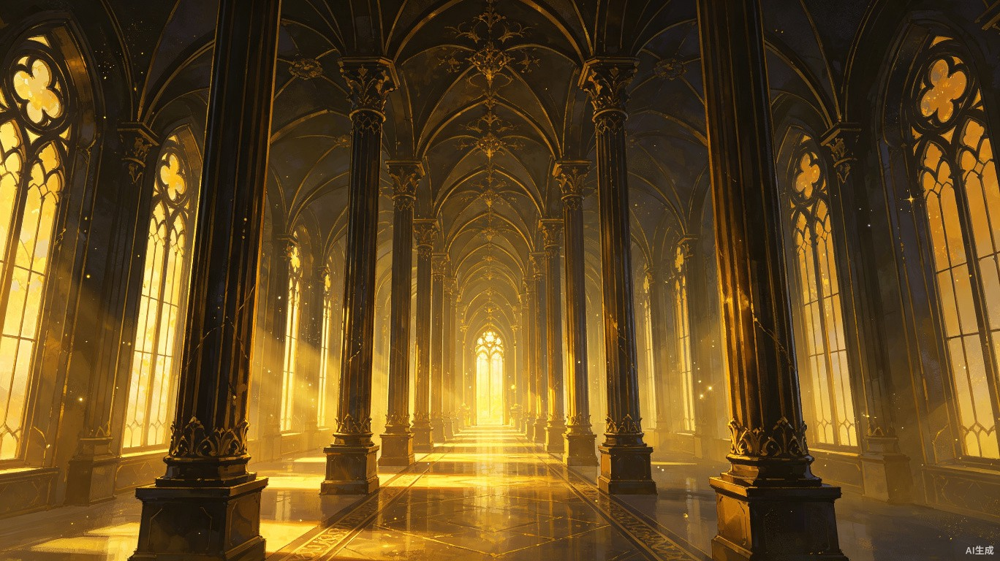

记录不是终点
用户醒来后快速说出梦境，AI 帮他整理成画面、分镜和文字，但真正的钩子是“我醒了，所以后面没了”。
这是独立产品 Demo：先把长梦境生成视觉小说，再发布到梦境广场，让真实用户在中断点继续写下去。当前页面里的“用户续写”是演示占位，正式产品中主要由真实用户创作。
记梦、解梦、AI 生图、视觉小说、续写故事都已经存在。这个产品的关键，是把它们拼成一个围绕“梦做到一半断掉”的共创体验。
用户醒来后快速说出梦境，AI 帮他整理成画面、分镜和文字，但真正的钩子是“我醒了，所以后面没了”。
别人看到梦的中断处，也会被激发“我觉得后面可能会这样”的冲动。于是梦从一个人的记忆，变成很多人的分支故事。
梦本身就是碎片化的，用户不需要写完整故事。续写到一半停住，也可以继续成为下一个人的创作入口。
梦境记忆在彻底醒来后会迅速消散。续写梦的"抢救模式"会在用户刚醒、还处于半梦半醒状态时提供极简录音入口——按住说话，松开自动保存。不需要组织语言、不需要想标题，先抢救出碎片再说。等彻底醒了再回来整理和发布。
这个 Demo 会展示完整生成过程：口述长梦境 → AI 抽取场景 → 生成图片提示词 → 生成分镜图 → 组成视觉小说。
说明：当前 Demo 的用户续写是占位演示，用来展示产品机制；真正上线后，梦境分支主要由真实用户创作，AI 只负责辅助润色、分镜和画面生成。

点击“进入视觉小说模式”后开始播放。
Demo 主要展示邓布利多这个长梦的完整流程。下面保留少量占位梦卡，用来表示正式产品中会有更多用户梦境。
这个创意小，技术不难，也就意味着技术壁垒不高。更适合由已有模型、内容分发和多模态能力的平台快速拼出来，抢占“续写梦”这个还没人明确占住的心智。
这个产品对字节的优势不在“从零研发一个很难的技术”，而在于把已有能力拼成一个非常顺的前端体验：语音说梦、模型润色、生图成视觉小说、社区分发、用户续写、分支再传播。开发成本低，验证速度快，适合快速抢占一个还没有被明确命名的内容品类。